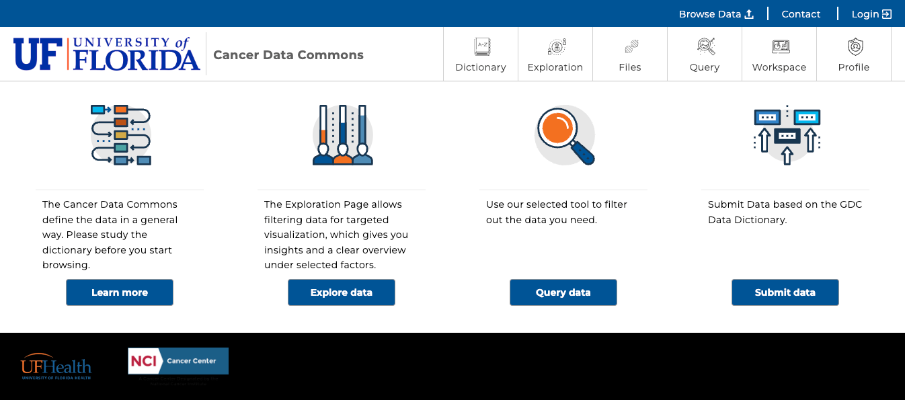
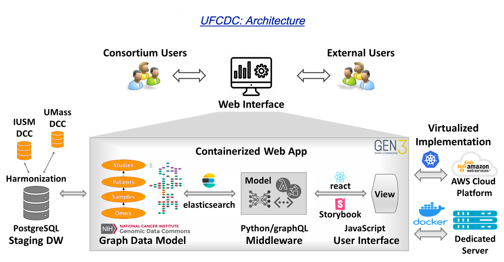

UFCDC Overview

UFCDC (https://ufcdc-portal.org/) is supported by cancer data center of University of Florida. The UFCDC compriseß clinical study sites and research projects, including clinical, translational, and primary or preclinical studies. The project recruit participants for clinical studies, following up with participants for 180 days, collecting blood, urine, saliva, and various biopsy bio-samples, capturing demographic and behavioral features, clinical conditions, laboratory tests, treatments, and outcomes, and generating multiomics data from microbiome, immunologic, proteomic, metabolomic, lipidomic, and RNA/ChIP-sequencing analyses. The University of Florida Cancer data center is providing the essential research infrastructure, including experimental design, study implementation, data management, and statistical analysis in support of the two primary studies within the network, a clinical trial and an observational study, as well as the translational projects that utilize the biospecimens collected by the two primary studies. To facilitate effective research use of the rich and complex cancer data, the UF technical team has developed UFCDC , the Cancer Research Data Commons, as the central data hub and research nexus (hhttps://ufcdc-portal.org/). ... Read More
Design of UFCDC
The architecture of the UFCDC system is composed of the following components:
- The UFCDC Data Warehouse. The heterogeneous clinical data, biosample information, and omics data information will be extracted from the UF cancer data center, ... Read More
- The UFCDC web application. The UFCDC system uses the Gen3 data common framework, which is widely used in NIH-sponsored projects. ... Read More

Functionalities
The novel UFCDC system supports the representation of behavioral and pathologic data unique to alcoholic hepatitis and facilitates data filtering, querying, visualization, and exploring, ... Read More
In summary, UFCDC is the central data hub connecting data of multiple modalities across clinical and translational teams. It is the engine that drives cancer research projects, the data interface between the cancer consortium and other research data commons, and the research nexus that ignites new research and collaborations.
Team
Technical team at Health Outcomes and Biomedical Informatics, University of Florida Colledge of Medicine
Research team at Health Cancer Center, University of Florida Health
PIs:
- Jiang Bian, PhD
- Qianqian Song, PhD
System development
- Minghao Zhou, Research Assistant
- Yanfei Wang, PhD Research Assistant
Acknowledgements
Publications
- N Jin, Z Li, C Kettler, B Yang, W Tu, J Su, "ARDaC Common Data Model Facilitates Data Dissemination and Enables Data Commons for Modern Clinical Studies." Studies in Health Technology and Informatics. 310:3-7(2024). doi: 10.3233/SHTI230916. PMID: 38269754. https://pubmed.ncbi.nlm.nih.gov/38269754/
- Li, Zuotian, Xiang Liu, Zelei Cheng, Yingjie Chen, Wanzhu Tu, and Jing Su. "TrialView: An AI-powered Visual Analytics System for Temporal Event Data in Clinical Trials." arXiv preprint arXiv:2310.04586 (2023). https://arxiv.org/abs/2310.04586
Contact Us
If you have any questions, please feel free to reach out to us.